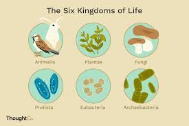
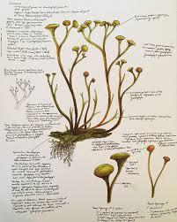
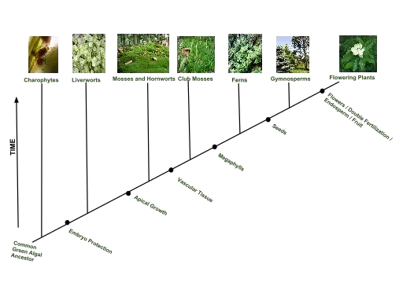
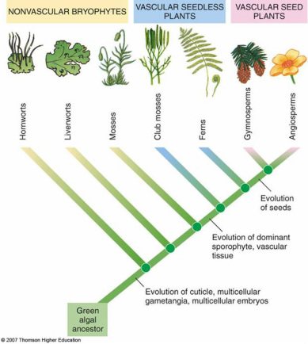
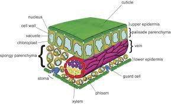
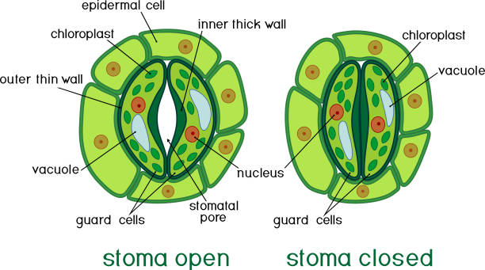
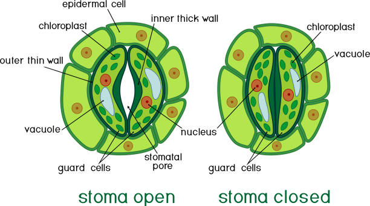
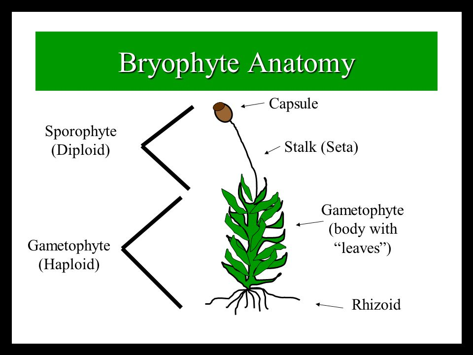
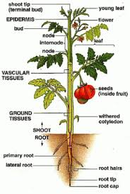

Diversity of Plants

Plants evolved from algae
- Algae cannot survive on land (only in moist enviornments)
- Plants had to adapt (evolve) characteristics that would allow them to survive and live on dry land
- Cooksonia is the earliest known land plant (fossil)

- It's non-vascular and similar to day bryophytes
Plants and algae: shared traits
- They both have same photosynthetic pigments (Chlorophyll a&b, carotenes, etc.)
- Both use starch to store photosynthetic products
- Both have cellulose in their walls
- Both have 'alternation of generation'...
- Both form a cell plante during cell division
Kindom Plantae
12-14 phyla, but four primary groupings:


Plants are the base of land ecosystems
- Nearly all organisms on land depend on plants for food.
- Humans depend on plants for food, clothes, medicines, and many other products.
-
Plants have balue when left in nature as well
- preventing runoff and erosion
- Recyclng carbon dioxide from the atmosphere
- Producing oxygen for us to breath
General plant anatomy

Know cuticle, epidermis, mesophyll and stoma
Stoma: opening for gas exchange
 

Bryophyte anatomy
- Rhizoids rather than roots
- Thallus: not differentiated into leaf and stem
- Sporophyte: is composed of diploid cells
- Gametophyte: is composed of haploid cells

Angiosperm anatomy

PLANTAE
- Plants are multicellular autotrophs that use specialized organelles called
chloroplasts to carry out photosynthesis
- Plants can reporduce both sexually and asexualy